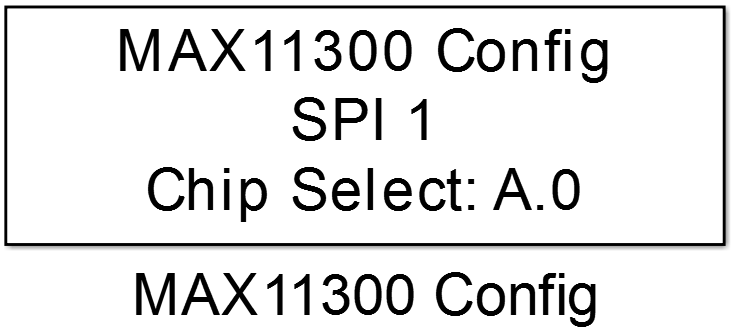
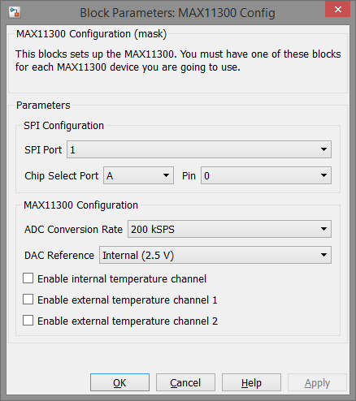

10.7.1. MAX11300 Config
Global configuration of a MAX11300 device.
10.7.1.1. Library
/SPI
10.7.1.2. Description
{kind=link}
This block makes global configuration of a MAX11300 device. It binds the SPI peripheral to which the device is connected to the to the underlying device object and configures a chip select pin for a specific MAX11300 device. If more than one MAX11300 are connected to the MCU and should be used by the model, each one has it’s own MAX11300 Config block with a unique chip select pin. Besides communication configuration the block sets also some global properties of the connected device, such as the sampling rate of the analog to digital converter, the DAC’s reference voltage source and enables the temperature measurement channels.
10.7.1.3. Data Type Support
This block has no input or output ports.
10.7.1.4. Parameters and Dialog Box
SPI Port
Selects the SPI peripheral wich is configured by an SPI Master Config block.
Chip Select Port and Pin
Configuration of the MCU Pin the device’s chip select input is connected to.
ADC Conversion Rate
The MAX11300 provides four different analog to digital conversion rates in kSps.
DAC Reference
For the digital to analog converter the MAX11300 provides either an internal reference voltage of 2.5V or an external voltage provided at the DAC reference input.
Enable internal temperature channel
Enables the internal temperature sensor. Must be checked to provide temperature reading through the MAX11300 Temperature block.
Enable temperature channel x
The MAX11300 provides two external temperature measurement channels. To enable temperature readings of these channel through the MAX11300 Temperature block the parameter must be checked.